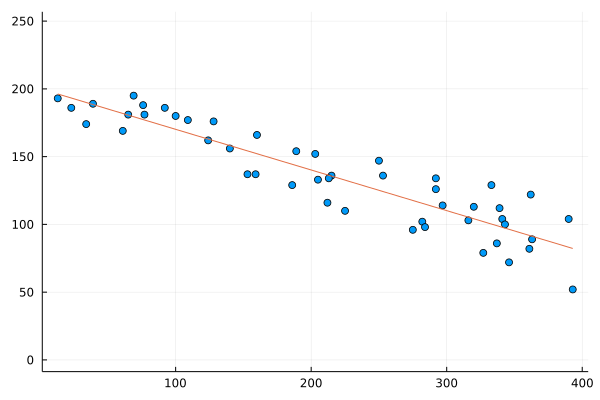

CY's Take on The Weekly Challenge #165
If you want to challenge yourself on programming, especially on Perl and/or Raku, go to https://theweeklychallenge.org, code the latest challenges, submit codes on-time (by GitHub or email).
Do tell me, if I am wrong or you strongly oppose my statements!
It's time for challenges in Week #165 !
Three things related to computing has impacted my recent life. (1) I have got an IT internship position in a small-size company; I have learnt to use Python and Selenium for web scraping ‐ a task I think it is really fun; I also need to update the company website, which is "made in PHP"... !? Alternatively, I could say it is "made in WordPress" because I discovered the plugins and themes in WordPress is so huge so that WordPress has its own "ecosystem", and some of plugins are even commercialized (and popped as ads while I was watching YouTubevideos)! One more thing: my position requires familiarity to NoCode platforms. It is interesting to investigate on this.
(2) New school term starts. This term we don't have programming-focused class, so I have lost my relatively edge, ooops. The classes are: Business Intelligence (BI), eCommerce and computer network (very elementary, the instructor said it is not over 1/4 of CCNA). All three classes have widened my horizon. I found there are not many open-source BI tools, and PowerBI (from Microsoft) and Tableau (owned by Salesforce) are really powerful. Perhaps it will change how people do presentations or have internal business meetings. For the open-source counterparts, I have briefly tried Metabase (coded in Clojure and JavaScript, according to its GitHub site). Lacking an import system from CSV or spreedsheet format, it has a room for catching up.
(3) After the Exhibition Centre Station opens, I finally took the courage to upload the Map::Tube::Hongkong. Actually the main task I have done was just put the local MTR map into the XML format. I have just edited the CPAN module and released 0.04.1 this morning. There are many details in uploading a CPAN module. (One of those things I am surprised by / handled incorrectly is that version0.4.1 is "smaller" than version0.3 or version0.2 on the CPAN display. See also CPAN::Version.)
I have a lot want to say. Like... after Eric was announced as the Champion in April, I recalled that I brutely expressed interests in writing CPAN modules for Contact Bridge, in the "Meet The (Monthly) Champion" section of TWC. But , sometimes promises*, like the contracts during Bridge play, cannot be made [on-time].
* Maybe this word is too serious.
Task 1: Scalable Vector Graphics (SVG)
The task is beginner-friendly and introduces us to the CPAN module SVG. I did some prioritization so the image might look better: putting the drawing of dots in the later stage.
my $img = SVG->new;
my @points;
while (<>) {
chomp;
my @nums = split ",", $_;
if (scalar @nums == 2) {
push @points, [@nums];
}
elsif (scalar @nums == 4) {
new_line(@nums);
}
}
new_point($_->@*) foreach @points;
This week I also made use of the CPAN module ARGV::OrDATA by teammate Mr Choroba, so the testing can be shown more easily.
a random plot
Task 2: Line of Best Fit
I am not good at statistics. Just followed the instructions on the mathisfun.com link provided.
my $n = scalar @points;
my $slope =
( $n * sum(map {$_->[0]*$_->[1]} @points) # n sum(xy) - sum(x) sum(y)
- sum(map{$_->[0]} @points) * sum(map{$_->[1]} @points) )
/ ( $n * sum(map{$_->[0]**2} @points) # n sum(sq x) - sq(sum x)
- (sum( map { $_->[0]} @points ))**2) ;
my $intercept =
( sum( map {$_->[1]} @points ) # sum(y) - slope * sum(x)
- $slope * sum( map {$_->[0]} @points) )
/ $n ;
sub y_best_fit {
my $x = $_[0];
return $slope*$x + $intercept;
}
Another skill I am bad at is packaging. So an extra data file is created and then the Task 2 script forcefully calls the command perl ch-1.pl < BEST_FIT_DATA > new.svg to complete the Task 2 via script in Task 1.
my $line_of_best_fit =
join ",", $minx,y_best_fit($minx),$maxx,y_best_fit($maxx);
open FH, "> BEST_FIT_DATA" or die $!;
say FH $line_of_best_fit;
say FH $_->[0],",",$_->[1] for @points;
system("perl ch-1.pl < BEST_FIT_DATA > new.svg"); # applicable on Linux
After finishing the tasks I recalled Julia. Julia is famous for scientific applications and the least square fit is a basic tool in statistics. After some search I encountered this blogpost: "Simplest least-squares in Julia", by Jacob Louis Hoover (11th Jan 2021). I have followed it step-by-step except the operator "\" does not work magically in the current version of Julia. Anyway we can touch more mathematics looking at the task via the lens of matrix operations (See also Moore-Penrose pseudoinverse.)
The image by Julia is different from that by the Task 2 Perl code and SVG module! Calm down and look patiently: the Plots in Julia counts the y-coordinates from bottom to top, while the SVG module interpreted them from top to bottom. It would be more obvious if we emphasize to the Julia interpreter to plot the graph with x-y ratio equal to 1:
plot!(
x -> slope*x + intercept,
legend = :none,
ratio = 1, #optional
)

Stay alert and healthy! □
Except from images and codes from other personnels, the content of this blogpost is released under a copyleft spirit. One may share (full or partial) content of this blogpost on other platform if you share it under the free and open content spirit.
link for CY's full codes: ch-1.pl, ch-2.pl, ch-2.jl
Contact on twitter: @e7_87.
Discuss via GitHub issues: here.
Email: fungcheokyin at gmail.com
Created Date: 17th May, 2022.
Published Date: 20th May, 2022.
Footnote: After releasing the blogpost, I realize that some points on the boundary via my Task 1 script are partially cut. -- Friday, May 20, 2022 PM09:45:00 HKT